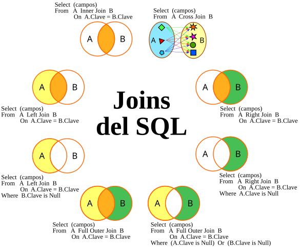

Structured Query Language no se considera un lenguaje de programación pero se ha consolidado como un lenguaje de consultas muy utilizado para bases de datos relacionadas.
SQL es un estandar que después se utiliza en otros lenguajes como MySQL, PostgreSQL, SQLite con algunas variaciones en cada uno.
Una base de datos relacional consiste en varias tablas conectadas entre ellas por algun valor en común (normalmente un ID). De esta manera se evita la duplicidad de los valores, es decir que cada dato es único y no es necesario guardarlo en más de una tabla.
Las bases de datos contienen tablas/entidades que son cada una de las tablas o conjunto de datos y los atributos que son cada una de las columnas de las tablas.
Por otro lado, existen las bases de datos NoSQL donde no hay relación entre tablas y puede haber datos duplicados en distintas tablas. Ambos tipos de bases de datos se utilizan en casos distintos: SQL permite almacenar menos datos y tener que hacer menos modificaciones al cambiar un valor, en cambio NoSQL permite hacer consultas más rápidas pero es más problematico a la hora de cambiar algun valor.
Es habitual que las tablas tengan un ID autoincrementativos, de manera que el número del ID va creciendo a medida que se añaden filas. Es un método útil para datos pocos sensibles. Cuando se guardan datos más sensibles se recomienda crear IDs aleatorios para evitar la predicción.
No es case sensitive por lo que ignora si se escribe en mayúscula o minuscula pero es habitual que las acciones se escriban en mayucula y los nombres de columnas/tablas en minuscula para una mejor lectura. Por otro lado, PostgreSQL si que es case sensitive.
Todas las consultas que se realizan se devuelve el resulta en forma de tabla (inclyendo cuando se eliminan datos, obtendremos una tabla vacia o con el resto de valores).
ACCIÓN columna FROM tabla
En el valor de columna, podemos poner varios atributos separados por comas o indicar * para obtener todas las columnas (no es recomendable ya que puede generar consultas de mucho peso).
ACCIÓN columna FROM tabla WHERE condición
El WHERE es opciónal y sirve para indicar condiciones, podemos acumular tantas condiciones como queramos separadas por comas. Cada condición debe incluir atributo, operador y los valores que van a regir la condición.
=, !=, <, <=, >, >= BETWEEN … AND …NOT BETWEEN … AND …IN (…)NOT IN (…) =, !=, <> LIKENOT LIKE% (solo para LIKE o NOT LIKE)_ (solo para LIKE o NOT LIKE) IN (…) NOT IN (…)La palabra DISTINCT evita que haya resultados duplicados. Seguramente todas las filas de una tabla tengan algun valor distinto entre ellas, pero si filtramos por unos atributos en concretos es probable que obtengamos los mismos valores en distintas filas. Con esta palabra se descartarán aquellos resultados idénticos.
SELECT DISTINCT column, another_column, …
FROM mytable
Por otro lado, podemos ordenar los resultados obtenidos con ORDER BY. Se incluye al final de la sintaxis y puede ser ascendente ASC o descendente DESC según los valores de la columna que le indiquemos. Sirve tanto para números como cadenas de texto.
SELECT column, another_column, …
FROM mytable
WHERE condition(s)
ORDER BY column ASC/DESC;
Otro concepto que se puede utilizar cuando se ordenan y filtran los resultados es el LIMIT donde indicamos el número máximo de resultados que queremos obtener.También podemos incluir el OFFSET que sirve para indicar a partir de que resultado empezamos a contar el LIMIT.
Esta limitación se usa para paginar los resultados de la mayoria de páginas web o aplicaciones. Cada vez que cambiamos de página se altera el OFFSET.
SELECT column, another_column, …
FROM mytable
WHERE condition(s)
ORDER BY column ASC/DESC
LIMIT num_limit OFFSET num_offset;
Las consultas en más de una tabla a la vez son muy comunes y parte fundamental de la normalización. La normalización es el diseño de la estructura de las bases de datos relacionales y debe cumplir ciertas reglas como evitar duplicados, nombres únicos en cada tabla, evitar dos filas iguales, todos los valores de una misma columna deben ser del mismo tipo. Todo esto permite disminuir problemas de actualizaciones de datos y proteger la integridad de los datos.
Para poder hacer consultas a traves de varias tablas es indispensable tener una clave primaria o primary key que relaciona una fila de una tabla con otra fila de otra tabla. Este valor suele ser el ID pero también puede algun otro dato.
El JOIN ... ON ... permite hacer la relación entre tablas indicando la otra tabla y el atributo que debe coincidir. Existen 4 tipos de JOIN dependiendo de los datos que queramos obtener:
SELECT column, another_table_column, …
FROM mytable
INNER/FULL/LEFT/RIGHT JOIN another_table
ON mytable.id = another_table.id
WHERE condition(s)
ORDER BY column, … ASC/DESC
LIMIT num_limit OFFSET num_offset;

Cuando se utiliza uno de estos JOINS es necasirio incluir el NULL. El null ayuda a filtrar los resultados para evitar obtener datos vacios.
Algunas tablas incluyen 0 y strings vacios cuando no hay valores pero en otras ocasiones podemos encontrar celdas sin valores, es deicr NULL.
El NULL se incluye como una condición del WHERE y puede ser IS NULL o IS NOT NULL.
SELECT column, another_column, …
FROM mytable
JOIN another_table
ON mytable.id = another_table.id
WHERE column IS/IS NOT NULL
AND/OR another_condition
AND/OR …;
Al igual que en lenguajes de programación, podemos incluir expresiones y/o funciones matematicas en las consultas para personalizar los resultados obtenidos a nuestras necesidades. Esta funcionalidad puede cambiar dependiendo de la base de datos utilizada.
Se puede utilizar la palabra AS para persolanizar el nombre del atributo a mostrar en el resultado. Es buena practica hacerlo cuando utilizamos expresiones o simplemente para facilitar la lectura de los resultados.
SELECT particle_speed / 2.0 AS half_particle_speed
FROM physics_data
WHERE ABS(particle_position) * 10.0 > 500;
SQL también soporta las funciones de agregación que permiten obtener resultados globales de distintos valores.
Algunas de las funciones más comunes son:
Documentación de las principales bases de datos: MySQL, Postgresql y SQLite.
Adicionalmente se pueden agrupar las filas en función de un valor para obtener la función que queramos por cada valor con GROUP BY. Por ejemplo si queremos ver la media de nota por cada clase.
Siempre se debe indicar una columna que aparezca en el SELECT, de modo que agrupamos los resultados por esta columna con los valores obtenidos en las funciones del resto de columnas.
El GROUP BY se utiliza después del WHERE, de manera que agrupa las filas después de ser filtradas. Si queremos hacer un filtrado o condición adicional teniendo en cuenta los grupos, podemos utilizar el HAVING. Funciona igual que el WHERE pero afecta solo a los grupos creados por GROUP BY.
SELECT AGG_FUNC(column_or_expression) AS
aggregate_description
FROM mytable
WHERE constraint_expression
GROUP BY column
HAVING group_condition;
Como resumen, esta es la sintaxis completa con todas las partes que puede incluir un consulta de SQL:
SELECT DISTINCT column, AGG_FUNC(column_or_expression), …
FROM mytable
JOIN another_table
ON mytable.column = another_table.column
WHERE constraint_expression
GROUP BY column
HAVING constraint_expression
ORDER BY column ASC/DESC
LIMIT count OFFSET COUNT;
Es importante tener en cuenta que las acciones se ejecutan secuencialmente, es decir en cada consulta se sigue un orden de ejecución que puede afectar al rendimiento de la consulta. Cada acción recibirá los datos modificados en la anterior acción.
Orden de ejecución: FROM > JOIN > WHERE > GROUP BY > HAVING > SELECT > DISTINCT > ORDER BY > LIMIT + OFFSET
Una sub consulta puede resultar muy útil para comparar o filtrar datos de varias tablas. Se pueden realizar en cualquier parte de una consulta normal (excepto en LIMIT y OFFSET) y deben estar dentro de parentésis.
SELECT *
FROM employees
WHERE salary >
(SELECT AVG(revenue_generated)
FROM employees AS dept_employees
WHERE dept_employees.department = employees.department);
Podemos utilizar el IN o NOT IN del WHERE para añadir una sub consulta y poder filtrar los resultados dependiendo de una consulta a otra tabla.
SELECT *, …
FROM mytable
WHERE column
IN/NOT IN (SELECT another_column
FROM another_table);
Mediante la acción INSERT INTO podemos añadir filas a nuestras tablas. Debemos indicar la tabla seguido de VALUES y la información a añadir. Si hay valores por defecto y/o desconocemos los datos de todas las columnas podemos indicar las columnas exactas donde deseamos añadir la información (en este caso el número de columnas indicadas debe coincidir con el número de datos a añadir).
INSERT INTO mytable
(column, another_column, …)
VALUES (value_or_expr, another_value_or_expr, …),
(value_or_expr_2, another_value_or_expr_2, …),
…;
También se pueden utilizar expresiones mátematicas y de cadenas de texto para modificar los valores a añadir.
Para poder actualizar datos en una tabla se debe indicar primero la tabla con UPDATE y a continuación la columna y el valor con SET. El tipo de los datos debe ser el mismo al actualizarlos.
Se añaden condiciones con WHERE, todas las filas que cumplan las condiciones seran actualizadas con los datos indicados. Si no se indica ningún WHERE se actualizan todas las filas de la tabla.
UPDATE mytable
SET column = value_or_expr,
c other_column = another_value_or_expr,
…
WHERE condition;
Para eliminar filas tan solo necesitamos ejecutar un DELETE seguido de un WHERE. Todo lo que cumpla la condición del WHERE será eliminado.
Para eliminar una tabla entera podemos obviar el WHERE. Es recomendable hacer un SELECT antes para corroborar que estamos seleccionando las filas a eliminar.
DELETE FROM mytable
WHERE condition;
Para crear una nueva tabla utilizamos CREATE TABLE y podemos añadir IF NOT EXISTS para evitar errores si la tabla ya existe seguido del nombre.
Depués del nombre de la tabla se indica entre parentesis todas las columans. Cada columna se define con su nombre, tipo de dato permitido y opcionalmente se puede indicar restricciones de la tabla y valor por defecto.
CREATE TABLE IF NOT EXISTS mytable (
column DataType TableConstraint DEFAULT default_value,
another_column DataType TableConstraint DEFAULT default_value,
…
);
Como SQL tiene tipado de datos, se debe indicar el tipo de dato que va a albergar cada columna. Los más comunes son:
TRUE , FALSE o NULL.YYYY-MM-DD.AAAA-MM-DD HH:MM:SS.YYYY-MM-DD HH:MM:SS que se ajusta a la zona horaria del
servidor. Útil para definir fechas de creación/modificación, se puede seguir con
DEFAULT CURRENT_TIMESTAMP para añadir la fecha y hora actual al crear el registro.
Es importante asignar bién el tipado a cada columna, ya que cada tipo de dato ocupa una cantidad de memoria distinta, para tablas con muchas filas distintas puede marcar la diferencia tener un tipo u otro.
Documentos de interés: MySQL, Postgres, SQLite y Microsof SQL Server.
Opcionalmente se puede indicar las restricciones de tabla, que són unas caracteristicas que pueden impedir añadir datos indeseados. Su objetivo principal es proteger la calidad y consistencia de los datos. Las más comunes son:
CHECK(year > 1900).
Por último podemos añadir un valor por defecto con DEFAULT seguido del valor. En caso de no recibir ningun valor al crear una fila se utiliza el valor por defecto.
Como las necesidades y caracteristicas de los datos a guardar pueden ir cambiando con el tiempo, tenemos la opción de ALTER TABLE para poder modificar las tablas ya existentes. Hay varias opciones:
La sintaxis es igual para las 3 opciones:
ALTER TABLE mytable
DROP column_to_be_deleted;
Cada base de datos tiene sus propias opciones para alterar tablas ya existentes, consultar documentación MySQL, Postgres, SQLite y Microsof SQL Server.
Con el comando DROP TABLE podemos eliminar una tabla entera, este proceso elimina todos los datos y el esquema de la tabla. Por otro lado, el comando DELETE elimina todos los datos de la tabla pero mantiene el esquema de esta (solo elimina el contenido).
Podemos añadir IF EXISTS para evitar errores en caso de que no haya ninguna tabla con dicho nombre.
DROP TABLE IF EXISTS mytable;
Si hay alguna otra tabla que tenga dependencias de la tabla a eliminar (por ejemplo una columna FOREIGN KEY), debemos modificar primero las dependencies y posteriormente eliminar la tabla.
Los triggers son procesos automaticos que se establecen después de realizar una acción en concreto, es decir, ejecuciones de código que se ejecutan después de cierto evento en la base de datos. Suelen activarse después de un INSERT, UPDATE o DELETE.
Tiene 3 tipos de activación: BEFORE, AFTER y INSTEAD OF.
Ej. añadir un usuario en la tabla users cuando se añade en la tabla followers:
CREATE TRIGGER increase_follower_count
AFTER INSERT ON followers
FOR EACH ROW
BEGIN
UPDATE users SET follower_count = follower_count +1
WHERE user_id = NEW.following.id
END;
Los triggers pueden ocasionar problemas de rendimiento sobretodo si pueden ejecutarse con mucha frecuencia, ya que cada evento puede encadenar una serie de triggers distintos. Se puede indicar que se haga cada X
Custom formats
Tip
code